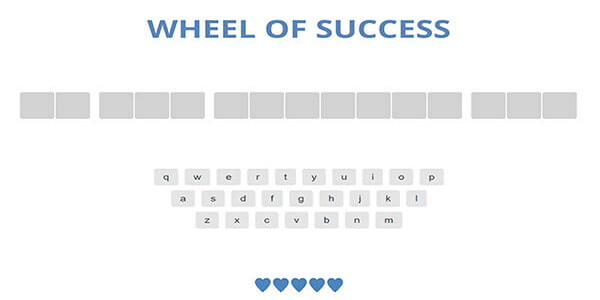

The Journey Here
Why web design? I am motivated to switch careers into a profession I find meaningful & impactful each day. The goal for me as a designer/ developer is to make your online presence memorable and visually stunning.
While bringing soft skills to the mix such as project management, attention to detail and collaboration, I enjoy the challenge of finding working solutions to complex problems.
Educating myself with Udemy, LinkedIn Learning & Treehouse since 2017 has been a stimulating experience I will never forget, allowing me to take on clients and learn key technical skills. The dream I have is finally becoming a reality!
In my free time I enjoy spending time with my wife, drawing, dancing, and volunteering my time in bible education.
Technical Skills
Front End
- HTML5
- CSS3
- Javascript
- Jquery
Web Tools
- HTML5
- CSS3
- Javascript
- Jquery
- Sass
- Bootstrap 4
Portfolio
Employee Directory

Used the fetch method to request 12 random users from a web API. Included Sass and advanced CSS techniques like CSS grid & flexbox.
Web App Dashboard

Created an interactive web app dashboard from scratch. Utilized SVG graphics, and a combination of JavaScript & Jquery programming. Incorporated CSS Grid & Flexbox a JavaScript library (chart.js) to create tables, charts and graphics to add a pleasing UX/UI experience.
Game Show App
Created a browser friendly word guessing game using pure JavaScript. Redesigned the game by using CSS transitions.
Photo Gallery App
Image galleries are an important feature of many websites. Showcased HTML5, CSS3, & JavaScript skills to create an interactive searchable image gallery.
Web Style Guide

Created my own custom css framework that can be dropped into any projectto speed up styling, and layout and development as a whole.
Aletta Bags

Wireframed, designed and developed a professional website from the ground up. Utilized various web technologies to launch my first independent website.
Recommendations
Randy Layne Student Success Specialist at Treehouse
Brian is a dedicated developer committed to not just writing programs that work, but are focused on best practices, readability and expanding Brian’s knowledge base. Coupled with a strong drive sharing what he has learned with others in the community is what made him an easy choice for his role as a Slack Champion. Brian is always pushing the boundaries of his coding knowledge and is always willing to try and share a new technique. He has made huge strides in the quality of the code he writes since joining the Front End Web Development Techdegree and he is sure to carry that drive to any development position he is hired for. I can strongly recommend Brian as an asset to any development team.
Alicia Mendez CEO & Brand President Aletta Bags LLC
Brian is a dedicated developer committed to not just writing programs that work, but are focused on best practices, readability and expanding Brian’s knowledge base. Coupled with a strong drive sharing what he has learned with others in the community is what made him an easy choice for his role as a Slack Champion. Brian is always pushing the boundaries of his coding knowledge and is always willing to try and share a new technique. He has made huge strides in the quality of the code he writes since joining the Front End Web Development Techdegree and he is sure to carry that drive to any development position he is hired for. I can strongly recommend Brian as an asset to any development team.

Nestor Padilla Senior Developer
Brian is a dedicated developer committed to not just writing programs that work, but are focused on best practices, readability and expanding Brian’s knowledge base. Coupled with a strong drive sharing what he has learned with others in the community is what made him an easy choice for his role as a Slack Champion. Brian is always pushing the boundaries of his coding knowledge and is always willing to try and share a new technique. He has made huge strides in the quality of the code he writes since joining the Front End Web Development Techdegree and he is sure to carry that drive to any development position he is hired for. I can strongly recommend Brian as an asset to any development team.